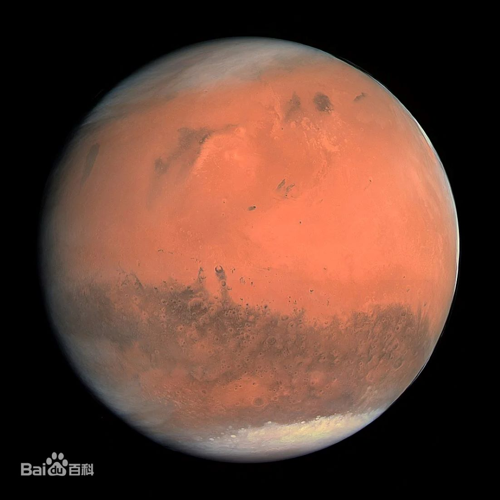

|  | 火星（英语：Mars；拉丁语：Martis；天文符号：♂），是距离太阳第四近的行星，也是太阳系中仅次于水星的第二小的行星，为太阳系里四颗类地行星之一。 欧洲古称火星为“马尔斯 [43]”，古罗马神话中的“战神”，也被称为“红色星球”。古汉语中则因为它荧荧如火，位置和亮度时常变动而称之为荧惑。 其橘红色外表是因为地表被赤铁矿（氧化铁）覆盖，火星的直径约为地球的一半，自转轴倾角和自转周期则与地球相近，但公转周期是地球的两倍。火星亮度最高可达-2.9等，但在大部分时间里比木星暗。 [1] 火星大气以二氧化碳为主（95.3%），既稀薄又寒冷，遍布撞击坑、峡谷、沙丘和砾石，没有稳定的液态水。南半球是古老、充满撞击坑的高地，北半球则是较年轻的低地平原。火星上最大的火山—奥林帕斯山和最大的峡谷—水手号峡谷。火星有两个天然卫星：火卫一和火卫二，形状不规则，可能是捕获的小行星。根据观测的证据，在火星观察到类似地下水涌出的现象，南极冰冠有部分退缩，雷达数据显示两极和中纬度地表下存在大量的水冰。 |
返回 |